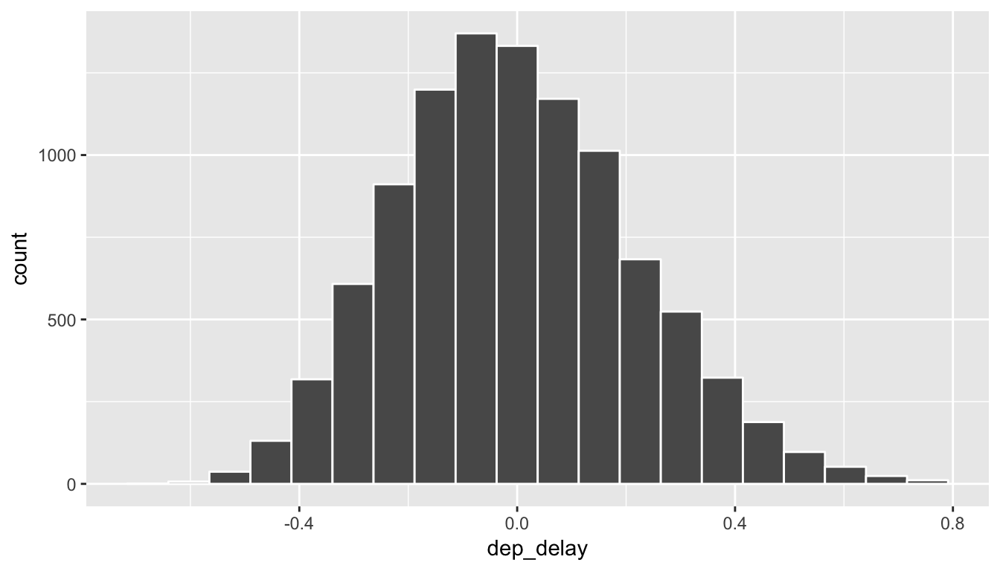
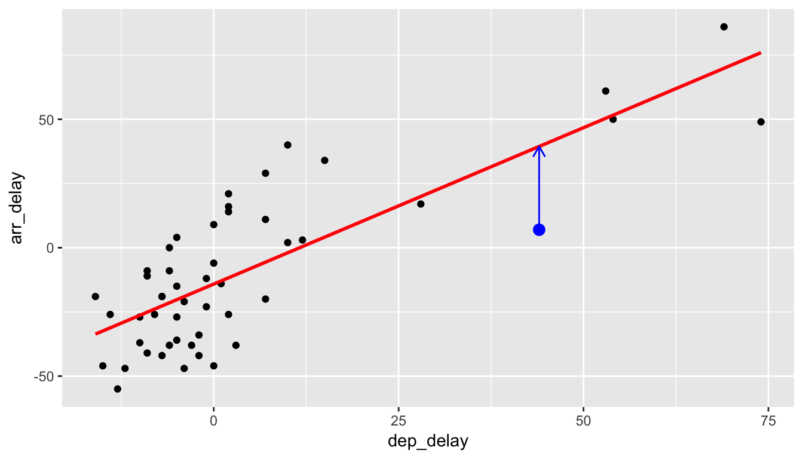

9 Regression via broom
One of the most commonly used statistical procedures is regression. Regression, in its simplest form, focuses on trying to predict values of one numerical variable based on the values of another numerical variable using a straight line fit to data. We saw in Chapters 7 and 8 an example of analyses using a categorical predictor (movie genre–action or romance) and a numerical response (movie rating). In this chapter, we will focus on going back to the flights data frame in the nycflights13 package to look at the relationship between departure delay and arrival delay. We will also discuss the concept of correlation and how it is frequently incorrectly implied to also lead to causation. This chapter also introduces the broom package, which is a useful tool in summarizing the results of model fits in tidy format. You will see examples of the tidy, glance, and augment functions with linear regression.
Needed packages
library(mosaic)
library(dplyr)
library(ggplot2)
library(knitr)
library(broom)
library(nycflights13)9.1 EXAMPLE: Alaskan Airlines delays
We’ll next explore the relationship/association of departure delays and arrival delays for a sample of 100 flights departing from New York City in 2013 with Alaskan Airlines.
library(nycflights13)
data(flights)
set.seed(2017)
# Load Alaska data, deleting rows that have missing departure delay
# or arrival delay data
alaska_flights <- flights %>%
filter(carrier == "AS") %>%
filter(!is.na(dep_delay) & !is.na(arr_delay)) %>%
resample(size = 50, replace = FALSE)
ggplot(data = alaska_flights, mapping = aes(x = dep_delay, y = arr_delay)) +
geom_point()Figure 9.1: Departure and Arrival Flight Delays for a sample of 50 Alaskan flights from NYC
Learning check
(LC9.1) Does there appear to be a linear relationship with arrival delay and departure delay? In other words, could you fit a line to the data and have it explain well how arr_delay increases as dep_delay increases?
(LC9.2) Is there only one possible line that fits the data “well”? How could you decide on which one is best if there are multiple options?
9.2 Correlation
One way to measure the linearity between two numerical variables is by using correlation. In fact, the correlation coefficient is defined as just that.
Definition: Correlation Coefficient
The correlation coefficient measures the strength of linear association between two variables.
Properties of the correlation coefficient:
It is always between -1 and 1, inclusive, where
- -1 indicates perfect negative relationship
- 0 indicates no relationship
- +1 indicates perfect positive relationship
Learning check
(LC9.3) Make a guess as to the value of the correlation cofficient between arr_delay and dep_delay in the alaska_flights data frame.
(LC9.4) Do you think that the correlation coefficient between arr_delay and dep_delay is the same as the correlation coefficient between dep_delay and arr_delay? Explain.
We can look at a variety of different data sets and their corresponding correlation coefficients in the following plot.
Figure 9.2: Different Correlation Coefficients
We can calculate the correlation coefficient for our example of flight delays via
alaska_flights %>%
summarize(correl = cor(dep_delay, arr_delay))## # A tibble: 1 x 1
## correl
## <dbl>
## 1 0.7908The sample correlation coefficient is denoted by \(r\). In this case, \(r = 0.7908\).
Learning check
(LC9.5) Would you quantify the value of correl calculated above as being
- strongly positively linear,
- weakly positively linear,
- not linear,
- weakly negatively linear, or
- strongly positively linear?
Discuss your choice.
If you’d like a little more practice in determining the linear relationship between two variables by quantifying a correlation coefficient, you should check out the Guess the Correlation game online.
9.2.1 Correlation does not imply causation
Just because arrival delays are related to departure delays in a somewhat linear fashion, we can’t say with certaintly that arrival delays are caused entirely by departure delays. Certainly it appears that as one increases, the other tends to increase, but that might not always be the case.
Causation is a tricky problem and frequently takes carefully designed experiments. These experiments remove confounding variables and only focus on the behavior of one variable in the presence of the levels of the other variable(s).
Be careful as you read studies to make sure that the writers aren’t falling into this fallacy of correlation implying causation. If you spot one, you may want to send them a link to Spurious Correlations.
Learning check
(LC9.6) What are some other confounding variables besides departure delay that could attribute to an increase in arrival delays? Remember that a variable is something that has to vary!
9.3 Linear regression
So we see above that there is a strong positive association between these delay variables. Let’s say that we are waiting for our flight to leave New York City on Alaskan and we are told that our flight is going to be delayed 25 minutes. What could we predict for our arrival delay based on the plot in Figure 9.1?
It may be hard to pick a particular value here, especially after just going over confidence intervals in Chapter 8. One way to do this would be to fit a line that fits the data best and then use the predicted arr_delay value from that line for dep_delay = 25 as our prediction. But what is meant by “fits the data best”?
The least squares/best fitting/linear regression line has been fit to the data below.
Figure 9.3: Regression line fit on delays
Here lm corresponds to “linear model” and we’ll see its use again in a bit when we find the values that define this line.
9.3.1 Understanding linear regression basics
Let’s choose an arbitrary point on the graph and label it the color blue.
Now consider this point’s deviation from the regression line.

Do this for another point.
And for another point.
We could repeat this process for each of the points in our sample. The pattern that emerges here is that the regression line minimizes the sum of the squared arrow lengths (i.e., the least squares) for all of the points.
As you look at these points you might think that a different line could fit the data better based on this criteria. That isn’t the case though and it can be shown via calculus (omitted here) that this line minimizes the sum of the squared residuals for these 50 points.
9.3.2 The equation of the line
We can use R and the lm function to retrieve the equation of the line of best fit here in red. A simple linear regression such as this will produce two coeffients: one for the \(y\)-intercept and one for the slope. We can use the tidy function in the broom package to extract these coefficients from the model fit.
delay_fit <- lm(formula = arr_delay ~ dep_delay, data = alaska_flights)
tidy(delay_fit) %>% kable()| term | estimate | std.error | statistic | p.value |
|---|---|---|---|---|
| (Intercept) | -14.155 | 2.809 | -5.038 | 0 |
| dep_delay | 1.218 | 0.136 | 8.951 | 0 |
In general, the equation of the line of best fit for a sample is \[\hat{y} = b_0 + b_1 x.\] Thus, our equation is \(\hat{y} = -14.155 + 1.2177 \, x.\) It is usually preferred to actually write the names of the variables instead of \(x\) and \(y\): \[\widehat{arr\_delay} = -14.155 + 1.2177 \, dep\_delay.\]
We can also extract the coefficients by using the coef function:
coef(delay_fit)## (Intercept) dep_delay
## -14.155 1.2189.3.3 Interpreting the slope
After you have determined your line of best fit, it is good practice to interpret the results to see if they make sense. Slope is defined as rise over run or the change in \(y\) for every one unit increase in \(x\). For our specific example, we can say that for every one minute increase in the departure delay of Alaskan Airlines flights from NYC, we can expect the corresponding arrival delay to be 1.22 minutes more.
This estimate does make some practical sense. It would be strange if arrival delays went down as departure delays increased. We also expect that the longer a flight is delayed on departure, the more likely the longer a flight is delayed on arrival. Remember that we are also using data here to make a guess as to how the population of all Alaskan flights might behave with regards to departure delays and arrival delays, so just as with other sampling procedures there is also variability in the sample estimates for the regression line.
9.3.4 Predicting values
Getting back to our hypothetical flight that has been delayed 25 minutes, we can use the augment function in the broom package to get the fitted arrival delay value:
delay_fit %>% augment(newdata = data_frame(dep_delay = 25))## dep_delay .fitted .se.fit
## 1 25 16.29 3.967Note the use of the data_frame function here, which must be used since newdata is expecting a data frame as its argument. We must also specify that we are plugging in 25 for the value of dep_delay here. We can see that the line predicted an arrival delay of 16.29 minutes based on our 25 minute departure delay. This also does make some sense since flights that aren’t delayed greatly from the beginning to tend to make up time in the air to compensate.
Important note: The correlation coefficient and the slope of the regression line are not the same thing. They will always share the same sign (positive correlation coefficients correspond to positive slope coefficients and the same holds true for negative values), but you can’t make any more conclusions about them than that.
For example, say we have 3 groups of points:
Their regression lines have different slopes, but \(r = 1\) for all 3. In other words, all three groups of points have a perfect (positive) linear relationship.
9.4 Inference for regression
The population least squares line is defined by the formula \(y = \beta_0 + \beta_1 x + \epsilon\). Here \(\epsilon\) represents the error term. It corresponds to the part of the response variable \(y\) that remains unexplained after considering the predictor variable \(x\). Often it is standard practice to assume that this error term follows a normal distribution. We will focus on checking whether that assumption is valid in Section 9.5.
In the population least squares line \(y = \beta_0 + \beta_1 x + \epsilon\), we can see that if \(\beta_1 = 0\) there is no relationship between \(x\) and \(y\). If \(\beta_1 = 0\), \(y = \beta_0 + \epsilon\). Therefore, \(y\) does not depend on \(x\) at all in the equation. A hypothesis test is frequently conducted to check whether a relationship exists between two numerical variables \(x\) and \(y\).
We can also use the concept of shuffling to determine the standard error of our null distribution and conduct a hypothesis test for a population slope. Let’s go back to our example on Alaskan flights that represent a sample of all Alaskan flights departing NYC in 2013. Let’s test to see if we have evidence that a positive relationship exists between the departure delay and arrival delay for Alaskan flights. We will set up this hypothesis testing process as we have each before via the “There is Only One Test” diagram in Figure 7.1.
9.4.1 Data
Our data is stored in alaska_flights and we are focused on the 50 measurements of dep_delay and arr_delay there.
9.4.2 Test Statistic \(\delta\)
Our test statistic here is the sample slope coefficient that we denote with \(b_1\).
9.4.3 Observed effect \(\delta^*\)
(b1_obs <- tidy(delay_fit)$estimate[2])## [1] 1.218The calculated slope value from our observed sample is \(b_1 = 1.2177\).
9.4.4 Model of \(H_0\)
We are looking to see if a positive relationship exists so \(H_a: \beta_1 > 0\). Our null hypothesis is always in terms of equality so we have \(H_0: \beta_1 = 0\).
9.4.5 Simulated Data
Now to simulate the null hypothesis being true and recreating how our sample was created, we need to think about what it means for \(\beta_1\) to be zero. If \(\beta_1 = 0\), we said above that there is no relationship between the departure delay and arrival delay. If there is no relationship, then any one of the arrival delay values could have just as likely occurred with any of the other departure delay values instead of the one that it actually did fall with. We, therefore, have another example of shuffling in our simulating of data.
Tactile simulation
We could use a deck of 100 note cards to create a tactile simulation of this shuffling process. We would write the 50 different values of departure delays on each of the 50 cards, one per card. We would then do the same thing for the 50 arrival delays putting them on one per card.
Next, we would lay out each of the 50 departure delay cards and we would shuffle the arrival delay deck. Then, after shuffling the deck well, we would disperse the cards one per each one of the departure delay cards. We would then enter these new values in for arrival delay and compute a sample slope based on this shuffling. We could repeat this process many times, keeping track of our sample slope after each shuffle.
9.4.6 Distribution of \(\delta\) under \(H_0\)
We can build our randomization distribution in much the same way we did before using the do and shuffle functions. Here we will take advantage of the coef function we saw earlier to extract the slope and intercept coefficients. (Our focus will be on the slope here though.)
rand_distn <- mosaic::do(10000) *
(lm(formula = shuffle(arr_delay) ~ dep_delay, data = alaska_flights) %>%
coef())
names(rand_distn)## [1] "Intercept" "dep_delay"We see that the names of our columns are Intercept and dep_delay. We want to look at dep_delay since that corresponds to the slope coefficients.
ggplot(data = rand_distn, mapping = aes(x = dep_delay)) +
geom_histogram(color = "white", bins = 20)
9.4.7 The p-value
Recall that we want to see where our observed sample slope \(\delta^* = 1.2177\) falls on this distribution and then count all of the values to the right of it corresponding to \(H_a: \beta_0 > 0\). To get a sense for where our values falls, we can shade all values at least as big as \(\delta^*\).
ggplot(data = rand_distn, aes(x = dep_delay, fill = (dep_delay >= b1_obs))) +
geom_histogram(color = "white", bins = 20)Figure 9.4: Shaded histogram to show p-value
Since 1.2177 falls far to the right of this plot, we can say that we have a \(p\)-value of 0. We, thus, have evidence to reject the null hypothesis in support of there being a positive association between the departure delay and arrival delay of all Alaskan flights from NYC in 2013.
Learning check
(LC9.7) Repeat the inference above but this time for the correlation coefficient instead of the slope.
(LC9.8) Use bootstrapping (of points) to determine a range of possible values for the population slope comparing departure delays to arrival delays for Alaskan flights in 2013 from NYC.
9.5 Residual analysis
The following diagram will help you to keep track of what is meant by a residual.

Here, \(y_i\) is an observed value of the arr_delay variable. \(i\) ranges from 1 to 50. For this example, it is the vertical component of the blue dot. \(\hat{y}_i\) is the fitted value–the arr_delay value that is being pointed to on the red line. The residual is \[\hat{\epsilon}_i = y_i - \hat{y}_i.\] Note the order here! You start at the non-pointy end of the arrow (\(y_i\)) and then subtract away what comes at the point (\(\hat{y_i}\)).
9.6 Conditions for regression
In order for regression to be valid, we have three conditions to check:
- Equal variances across explanatory variable (Check residual plot for fan-shaped patterns.)
- Independent observations, errors, and predictor variables (Check residual plot for no time series-like patterns.)
- Nearly normal residuals (Check quantile-quantile plot of standardized residuals.)
As you can see from the things to check after the conditions residuals will play a large role in determining whether the conditions are met. Residuals are estimates for the error term \(\epsilon\) we discussed earlier, and this is a big reason why they play an important role in validating regression assumptions.
Residual plot
To construct a residual plot we will analyze data from the augment function in broom. Specifically, we are interested in the .fitted and .resid variables there:
fits <- augment(delay_fit)
ggplot(data = fits, mapping = aes(x = .fitted, y = .resid)) +
geom_point() +
geom_abline(intercept = 0, slope = 0, color = "blue")
Quantile-quantile plot
ggplot(data = fits, mapping = aes(sample = .resid)) +
stat_qq()Checking conditions:
We are looking to see if the points are scattered about the blue line at 0 relatively evenly as we look from left to right. We have some reason for concern here as the large lump of values on the left are much more dispersed than those on the right.
The second condition is invalidated if there is a trigonometric pattern of up and down throughout the residual plot. That is not the case here.
We look at the quantile-quantile plot (Q-Q plot for sure) for the third condition. We are looking to see if the residuals fall on a straight line with what we would expect if they were normally distributed. We see some curvature here as well. We should begin to wonder if regression was valid here with both condition 1 and condition 3 in question.
We have reason to doubt whether a linear regression is valid here. Unfortunately, all too frequently regressions are run without checking these assumptions carefully. While small deviations from the assumptions can be OK, larger violations can completely invalidate the results and make any inferences improbable and questionable.
9.7 Conclusion
9.7.1 Script of R code
An R script file of all R code used in this chapter is available here.
9.7.2 What’s to come?
In the last chapter of the textbook, we’ll summarize the purpose of this book as well as present an excellent example of what goes into making an effective story via data.